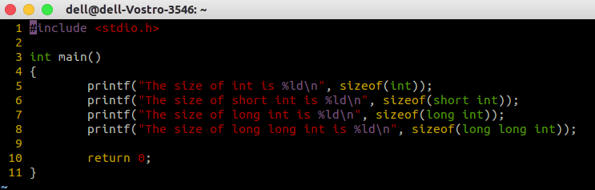
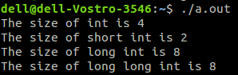
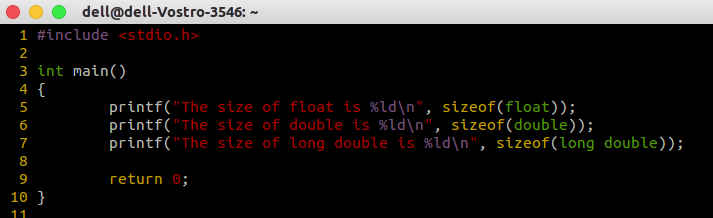
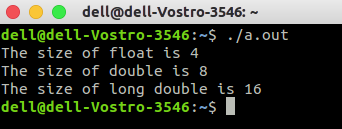
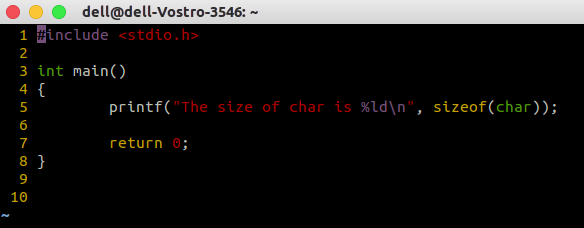
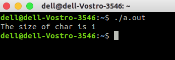

Data Types in C
C language is a bit rich in terms of data types. We have a lot of data types.
But we must first define what a data type is. To understand it in basic form,
think of data types as a set of finite values with a set of operations that
can be performed on those values. Some
They are -
- Integer
- Short Integer
- Long Integer
- Long Long Integer
- Float
- Double
- Long Double
- Character
int (Integer), short int (Short Integer), long int (Long Integer), long long int (Long Long Integer)
int is the most basic data type in C language. A common mistake is to learn the size of data types. actually the size of data types depend on your system and not the language you use. in a 64 bit architecture, genarally an int is of 4 bytes, a short int is of 2 bytes, a long int is of 4 or 8 bytes, and a long long int is of 8 bytes. The general rule to remember is, a short int cannot be larger than an int. An int cannot be larger than a long int. A long int cannot be larger than an long long int.So let us write a code to see the size of these data types in the system.

Output looks like

The range of values that an these data types can store is -2 ^ (sizeof(data type) - 1) to + 2 ^ (sizeof(data type) - 1) - 1 . The symbol ^ stands for power
The values that they store is integer. eg -2, -467838, 0, 478229, 10, 4 etc.
float (Float), double (Double), long double (Long Double)
They are used to store large data values. They are also used to store fractional values. But they have precision problem. To understan this, let us first look at their size.
Output looks like

Now it is common sense to understand why they loose pescision. The size of float is also 4 bytes, but it can store larger values. This is by making compromise with the precision. You will learn about it more in your computer architecture classes.
char (Character)
It is used to store a single character.
Output looks like

This was just a little introduction to data types to get you started. For reference visit
data types1
Data Types 2